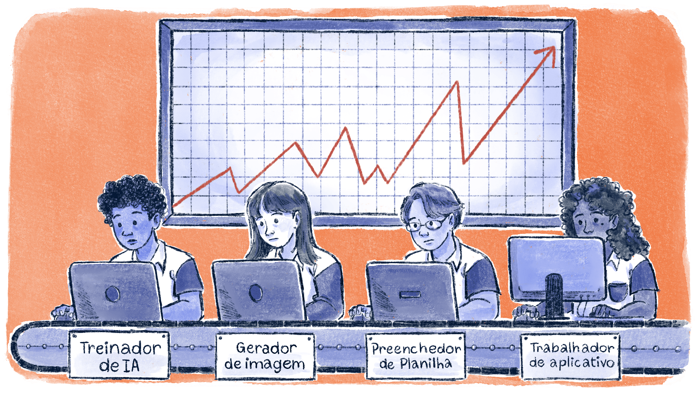

Gestão da EPT sob o neoliberalismo
Para compreendermos as características básicas da gestão escolar sob o neoliberalismo, é útil visitarmos o conceito de neotecnicismo. Para isso, devemos frisar que cada modelo de desenvolvimento prioritariamente adotado pelo Estado corresponde a uma pedagogia hegemônica, a qual define os princípios básicos da política educacional vigente.
Nem sempre é uma tarefa simples identificar tal correspondência e esse é um problema de pesquisa do qual se ocupam historiadores ou sociólogos da educação. Em linhas gerais, podemos dizer que, na República Oligárquica (1891-1930), preponderou uma pedagogia de tipo liberal, principalmente como resultado da luta de setores organizados da nascente classe média brasileira. Nesse período, o foi protagonista de conquistas importantes em termos de uma educação progressista e vinculada aos anseios das grandes massas populares.
Já na etapa desenvolvimentista (1930-1980), o tecnicismo emergiu como ideologia pedagógica hegemônica, definindo as diretrizes gerais das políticas educacionais. Podemos definir 'tecnicismo' como uma concepção que assume a instrução como insumo produtivo e defende a ideia de que os investimentos em educação formal resultam, inevitavelmente, em crescimento econômico. A essa ideia está vinculada uma ampla política de formação de técnicos capazes de levar adiante os projetos desenvolvimentistas, como construção de estradas, projetos de urbanização (como a construção de Brasília), abertura de grandes empresas estatais em setores estratégicos etc. Nessa política, há alguma autonomia, mas ela não chega a romper com o traço estrutural da dependência, responsável pelo estímulo do capital estrangeiro.
A ênfase do tecnicismo educacional na eficiência e na racionalidade carrega uma forte influência da filosofia positivista e da psicologia behaviorista ao buscar tornar o ensino mais funcional. Para tanto, estabelece a organização do processo de ensino como um sistema técnico, a avaliação da aprendizagem por meio de testes padronizados e a primazia do uso da tecnologia educacional como forma de facilitar a aprendizagem.
De acordo com (2013 [2007]), o neoliberalismo mantém os princípios basilares do tecnicismo e os adapta ao novo cenário político-econômico. Assim, mantém-se a ideologia produtivista (mais educação = mais crescimento econômico), mas ela é adequada ao quadro de desemprego, desmonte dos serviços públicos via privatizações, retirada de direitos sociais e financeirização. A estratégia para implementar esse programa é levar a ideia de eficiência às últimas consequências em todas as políticas estatais – inclusive, a educacional.
Concebe-se, então, um modelo de escola que replica a lógica da empresa capitalista:
Estamos, pois, diante de um neotecnicismo: o controle decisivo desloca-se do processo para os resultados. É pela avaliação dos resultados que se buscará garantir a eficiência e produtividade. [...] O neotecnicismo se faz presente alimentando a busca da ‘qualidade total’ na educação e a penetração da ‘pedagogia corporativa’

Título: A escola neoliberal
Fonte: Prosa (2025g).
Sob o princípio geral da , que estrutura o modo de produção capitalista, o neotecnicismo se fundamenta em três ideologias. As duas primeiras são de natureza cognitivo-pedagógica e estão relacionadas: o individualismo e a noção de competência.
No neoliberalismo, ser empregável significa ser competente. Ainda que se mantenha a ideia de eficiência como motor do desenvolvimento, agora não há mais a garantia de um lugar no mercado de trabalho a partir da preparação para um ofício específico. Os indivíduos devem exercer sua capacidade de escolha investindo no seu próprio capital humano e acumulando competências a serem trocadas no mercado. Quem tiver mais competências acumuladas, possui mais poder de barganha e, consequentemente, terá mais sucesso.
O papel central da educação nesse processo dá origem ao que se convencionou denominar 'Pedagogia das Competências'. O vídeo a seguir “Aula Aberta com Marise Ramos – Pedagogia das Competências: Autonomia ou Adaptação?” trata essa temática e auxilia na compreensão do conceito.
Título: Aula Aberta com Marise Ramos – Pedagogia das Competências: Autonomia ou Adaptação?
Fonte: Pôrto (2016); Ramos (2025).
Elaboração: Prosa (2025h).
A terceira ideologia que constitui o neotecnicismo tem natureza político-econômica. Se no tecnicismo clássico o Estado cumpria um papel importante no direcionamento de diretrizes educacionais, agora são os mecanismos de mercado que devem induzir a competição individual na aquisição das competências.
A lógica privada e os organismos internacionais seriam, na perspectiva neotecnicista, portadores das melhores ideias e das condições de estímulo à educação de qualidade. Daí advém o modelo de escola de Educação Profissional baseado em redução de custos, parceria público-privada e currículos orientados por saberes práticos. Trata-se de um modelo que orientou boa parte das reformas educacionais em países dependentes a partir da década de 1980 até os dias atuais.
Em resumo, os web stories a seguir relacionam, de um lado, os modelos de desenvolvimento adotados prioritariamente pelo Estado brasileiro em cada macro-período histórico da República e, de outro, a pedagogia hegemônica que orienta as políticas educacionais.


Título: Modelos de desenvolvimento prioritário e pedagogias hegemônicas no Brasil
Fonte: Orange County Archives (2012); Seattle Municipal Archives (2013; 2022).
Elaboração: Prosa (2025i).